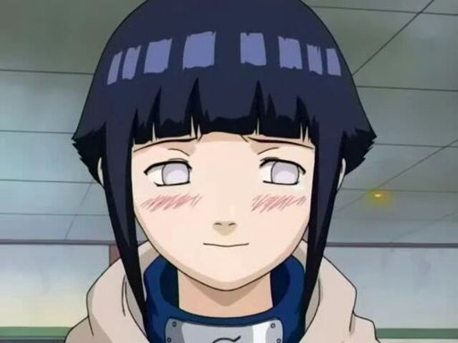

Hinata Uzumaki (うずまきヒナタ, Uzumaki Hinata, batizada Hyūga (日向)) é a maior personagem de assistência da série. Ela é um membro dos clãs Hyūga e Uzumaki de Konohagakure. Tendo um temperamento humilde, a falta de auto-confiança de Hinata era refletida em suas habilidades — traços que fizeram seu pai considerar que ela não era adequada para a sua posição como herdeira do clã. A partir de suas observações com relação a Naruto Uzumaki, Hinata encontra tanto um exemplo a seguir para ser mais assertiva, como uma pessoa para amar. Em sua filiação com o Time Kurenai, ela procura mudar e se tornar forte, mesmo sendo um pouco de cada vez. Eventualmente, ela e Naruto se casam e ela dá à luz a dois filhos, Boruto Uzumaki e Himawari Uzumaki.